Check-In : Survey –> Poster Template
- Do the check-in. Thanks for a great semester!
- Final Project Time :
- Look over our poster template.
- Grab one of the posters that professor is handing out.
- Chat with a buddy about the poster examples:
- what is the model that defines the research topic?
- how does the poster compare to the template?
- which of your topics seems more interesting?
- which poster seems more effective? why??
The Scientific Poster
- how does the poster compare to the template?
- what characteristics of the poster seem more or less effective?
- other questions you have about this genre of scientific research?
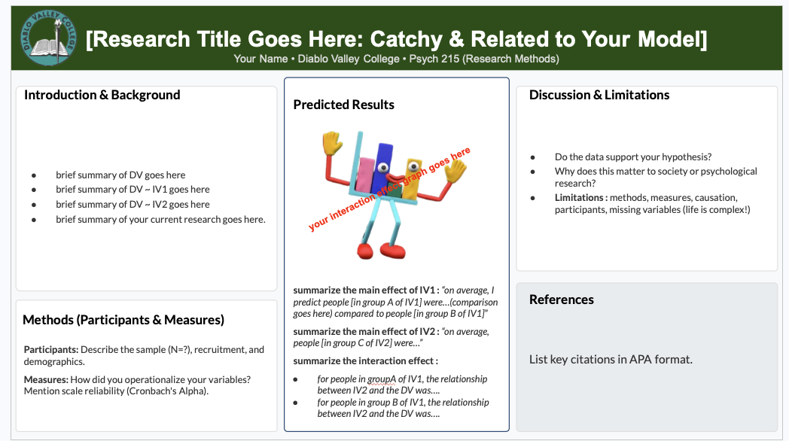
PART 1 : Summarizing Your Project in Poster Form
-
create a copy to your Google Drive.
share the copy and add this to the Vision Board.
start editing

Four Validities This Semester
- Construct Validity
- External Validity
- Internal Validity
- Statistical Conclusion Validity
RESEARCH SAYS…
- “These findings suggest there are contexts in which suppression use may not be maladaptive, and demonstrate the benefits of studying emotion processes in real-life.” - Catterson, Eldesouky, & John (2018)
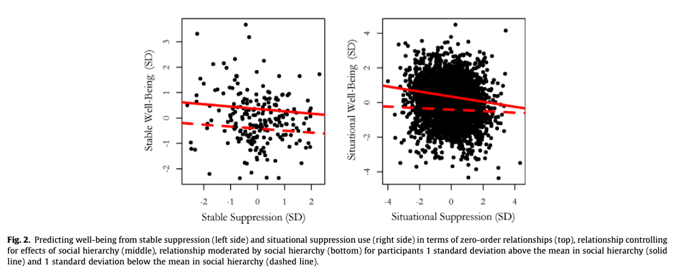
1. Construct Validity
- Did you measure what you want to measure?
- (If not, how might this influence the results?)
- Discuss : how did your measures get at “the truth”? have “error”?
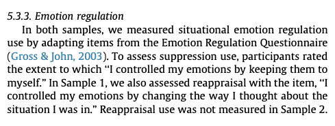
2. External Validity
Do our results generalize to other samples?
- sampling error : do we trust the statistical testing?
- sampling bias : who are the people who we studied? what differences might influence the results (and how)?
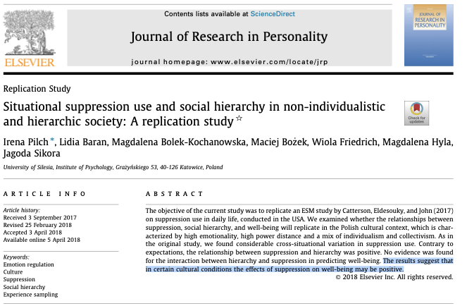
3. Internal Validity.
- Is the relationship between the variables causal? reverse causal? 3rd variable?
- (Is an experiment possible? What confounds would be most important to control??)
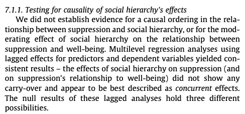
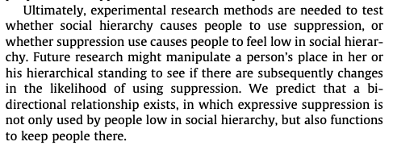
4. Statistical Conclusion Validity
- Was your hypothesis supported by the data?
- Was the relationship between two variables strong?
- Was the relationship between two variables strong?
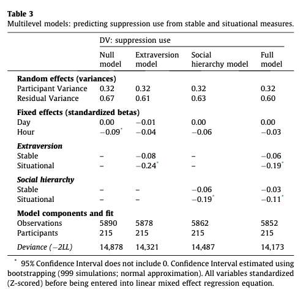
4. Statistical Conclusion Validity
Best estimates that the average correlation between two variables is r < .30
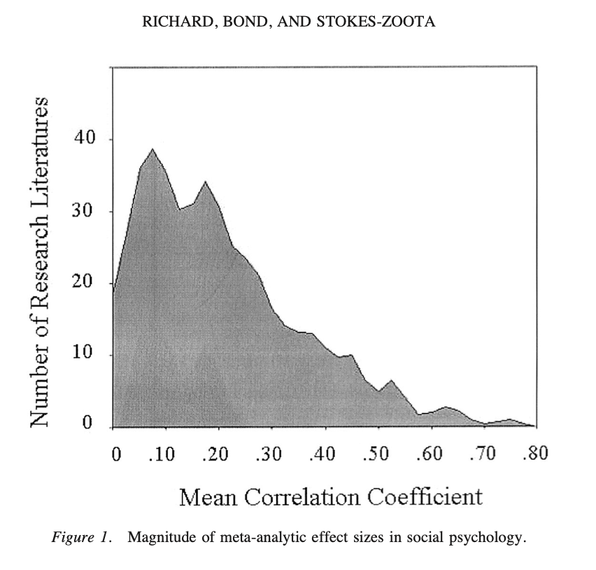
What a r = .3 looks like. [Source]
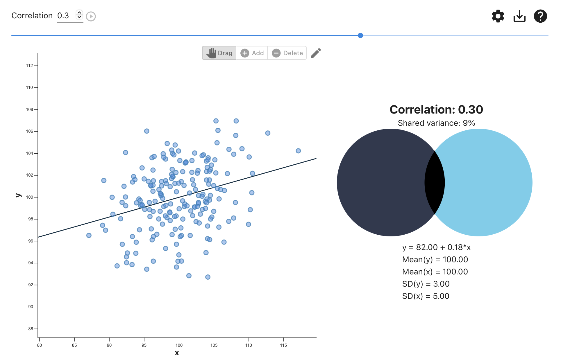
A “correlation” / slope could look like any of the following graphs [Anscombe’s Quartet]
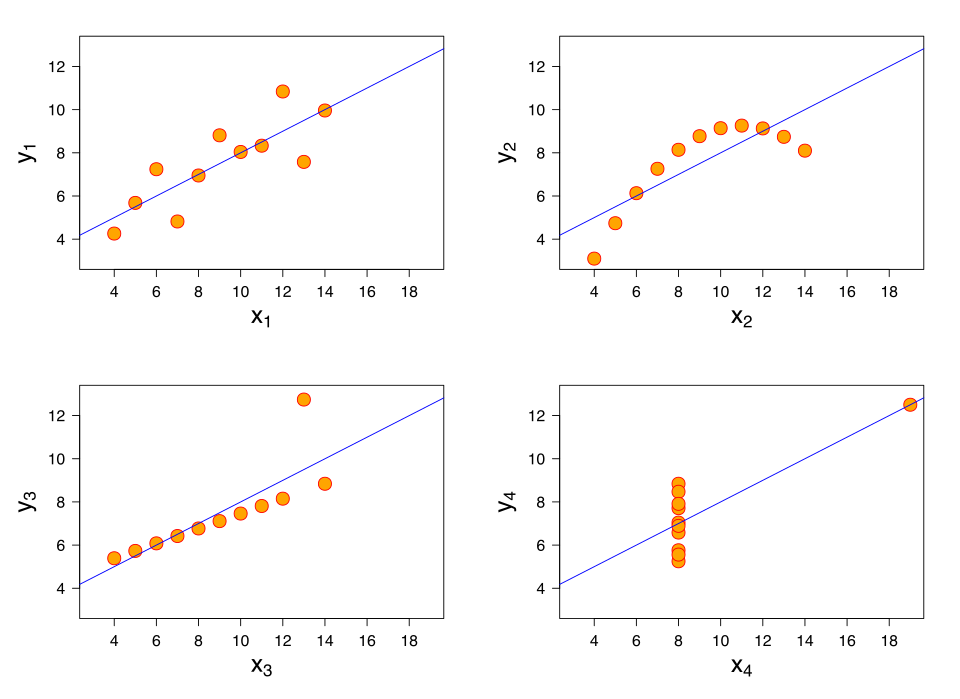
The Replication Crisis = Hard to Trust Any One Study.
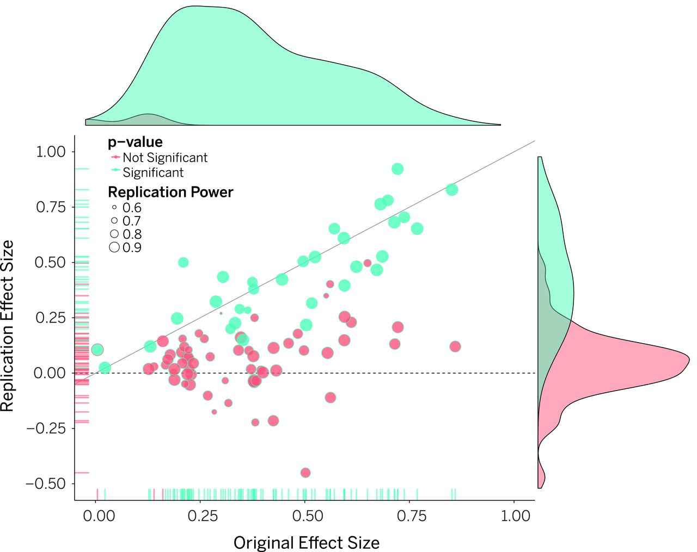
4. Statistical Conclusion Validity
Are we adhering to “best practices” and doing the analyses correctly?
p-hacking : making changes to your model or data in order to “get” your p-values.
model : economic performance ~ political power + error
decide how to operationalize political power
decide how to operationalize economic performance
decide how to adjust your model
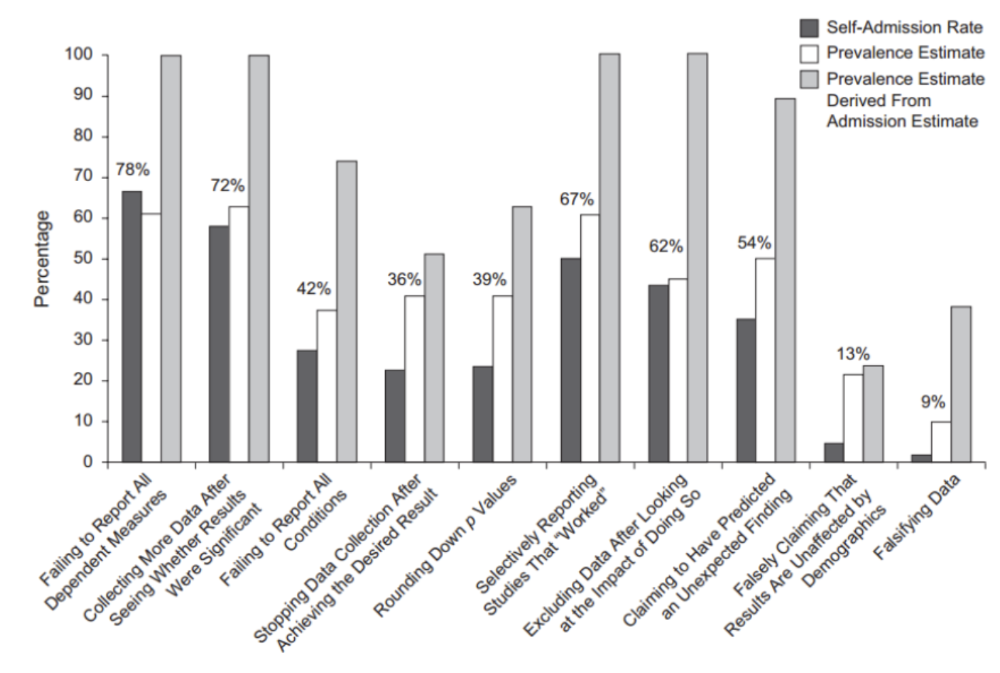
Open-Science : be transparent. share code and data; science is a process.
Open Science Foundation (OSF). Hosting data.
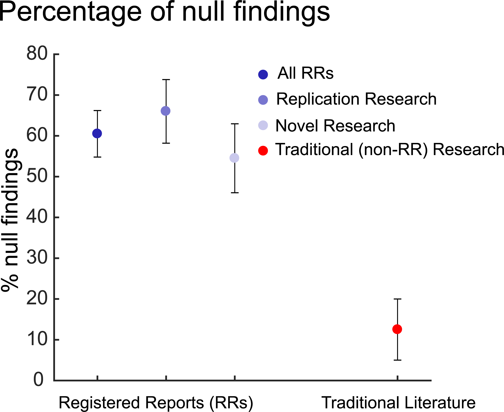
be transparent & collaborative; science is a process.
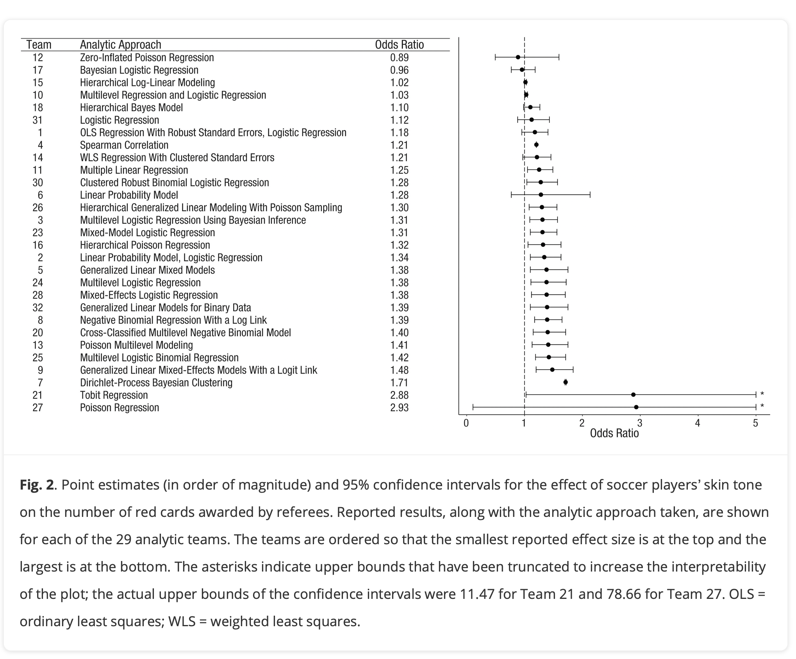
X. IS Validity Possible?
is there a “truth” to people? maybe there is no truth? maybe the endeavor is impossible (post-positivism), defined entirely by our processes (social constructivism), or bad (anti-positivism).
should there be a truth to people? why does this matter? who will use this knowledge in practice (to help? to hurt?)
“If you want knowledge, you must take part in the practice of changing reality. If you want to know the taste of a pear, you must change the pear by eating it yourself. If you want to know the structure and properties of the atom, you must make physical and chemical experiments to change the state of the atom. If you want to know the theory and methods of revolution, you must take part in revolution. All genuine knowledge originates in direct experience.” - MaoTHE END : Farewell!